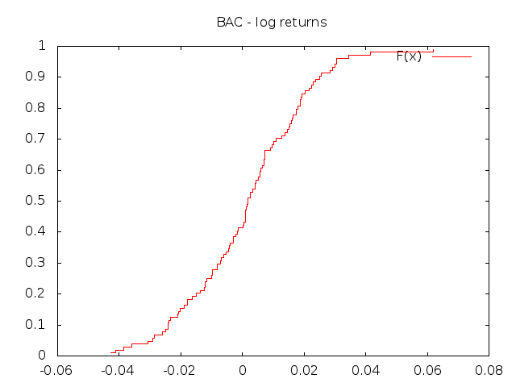
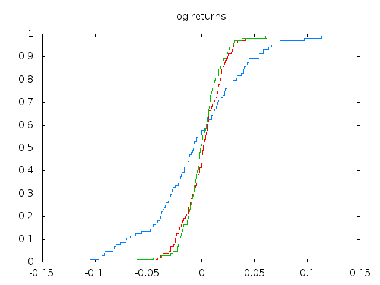

Description of random variables
Table of Contents
Distribution
Given a collection of observations which can be considered independent realizations of a random variable \(X\), one is often interested in the visual inspection of its empirical distribution \(\hat{F}(x)\) which is the estimate of the distribution function
\[ F(x) = Prob \left\{ X \leq x \right\} \]
The quantity \(\hat{F}(x)\) is simply the fraction of observations that are lower or equal \(x\). The file prices-open.gz contains weakly open prices for ten top companies on the NYSE. The fourth column is Bank of America (BAC) and the distribution of the log prices is
gbget 'prices-open.gz(4)' | gbdist
this is really not informative. Due to their integrated nature, subsequent prices can hardly be considered independent realizations of the same random variable. A better result can be obtained with the returns
gbget 'prices-open.gz(4)ltd' | gbdist | gbplot -t "BAC - log returns" plot 'w steps title "F(x)"'
which produces the plot below

Figure 1: Distribution function of BAC log-returns
Multiple distributions can be computed at the same time using the
option -t. With this option gbdist print the distribution of the
data in each column. The distributions of the different columns are
separated by two empty lines (different blocks) so that the command to
print them is slightly more complicated
gbget 'prices-open.gz(4:6)tldt' | gbdist -t | gbget '()[1:3]' | \ gbplot -t "BAC - log returns" plot "u 1:2 w steps, '' u 3:4 w steps, '' u 5:6 w steps"

Figure 2: Log-returns distribution functions
Density
A first empirical approximation of the probability density can be obtained using the histogram. This is a simple counting of the number of observations which lie inside a given intervals. Using the same data of the previous section an istogram